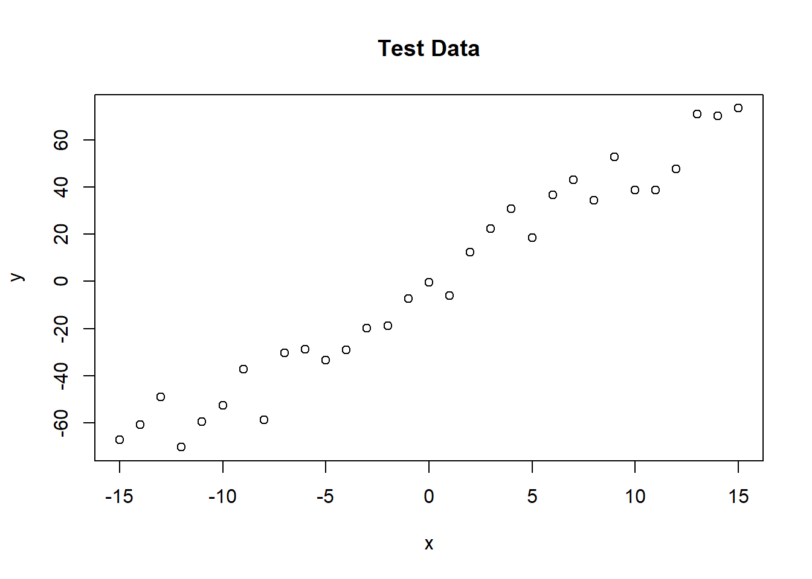
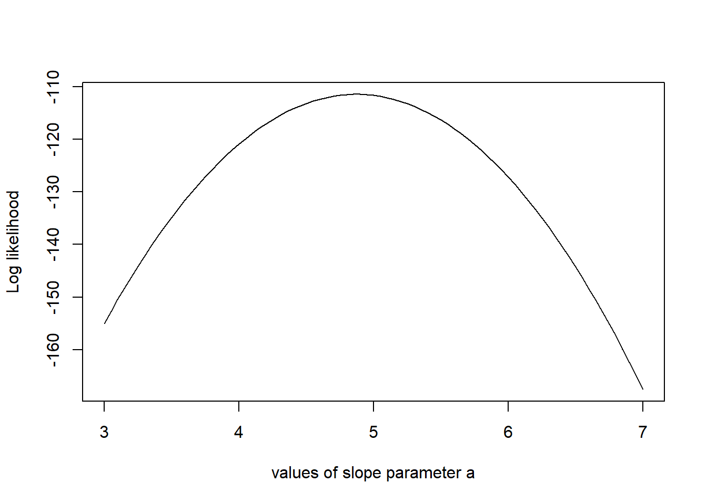
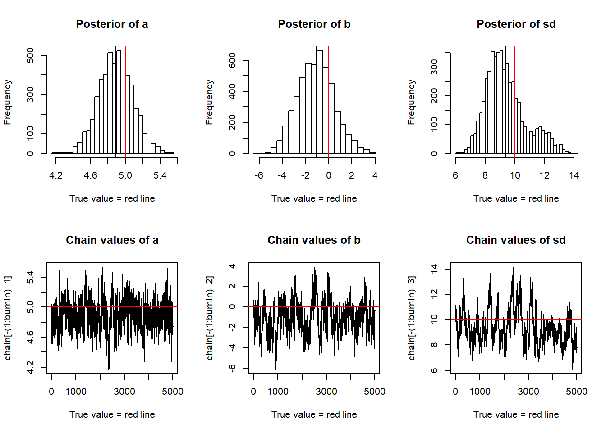

knitr::opts_chunk$set(echo = TRUE)
trueA <- 5
trueB <- 0
trueSd <- 10
sampleSize <- 31
# create independent x-values
x <- (-(sampleSize-1)/2):((sampleSize-1)/2)
# create dependent values according to ax + b + N(0,sd)
y <- trueA * x + trueB + rnorm(n=sampleSize,mean=0,sd=trueSd)
plot(x,y, main="Test Data")
The next step is to specify the statistical model. We already know that the data was created with a linear relationship y = a*x + b between x and y and a normal error model N(0,sd) with standard deviation sd, so let’s use the same model for the fit and see if we can retrieve our original parameter values.
For estimating parameters in a Bayesian analysis, we need to derive the likelihood function for the model that we want to fit. The likelihood is the probability (density) with which we would expect the observed data to occur conditional on the parameters of the model that we look at. So, given that our linear model y = b + ax + N(0,sd) takes the parameters (a, b, sd) as an input, we have to return the probability of obtaining the test data above under this model (this sounds more complicated as it is, as you see in the code, we simply calculate the difference between predictions y = b + ax and the observed y, and then we have to look up the probability densities (using dnorm) for such deviations to occur.
likelihood <- function(param){
a = param[1]
b = param[2]
sd = param[3]
pred = a*x + b
singlelikelihoods = dnorm(y, mean = pred, sd = sd, log = T)
sumll = sum(singlelikelihoods)
return(sumll)
}
# Example: plot the likelihood profile of the slope a
slopevalues <- function(x){return(likelihood(c(x, trueB, trueSd)))}
slopelikelihoods <- lapply(seq(3, 7, by=.05), slopevalues )
plot (seq(3, 7, by=.05), slopelikelihoods , type="l", xlab = "values of slope parameter a", ylab = "Log likelihood")
As a second step, as always in Bayesian statistics, we have to specify a prior distribution for each parameter. To make it easy, I used uniform distributions and normal distributions for all three parameters. [Some additional information for the “professionals”, skip this when you don’t understand what I’m talking about: while this choice can be considered pretty “uninformative” for the slope and intercept parameters, it is not really uninformative for the standard deviations. An uninformative prior for the latter would usually be scale with 1/sigma (if you want to understand the reason, see here). This stuff is important when you seriously dive into Bayesian statistics, but I didn’t want to make the code more confusing here.]
The product of prior and likelihood is the actual quantity the MCMC will be working on. This function is called the posterior (or to be exact, it’s called the posterior after it’s normalized, which the MCMC will do for us, but let’s not be picky for the moment). Again, here we work with the sum because we work with logarithms.
posterior <- function(param){
return (likelihood(param) + prior(param))
}Now, here comes the actual Metropolis-Hastings algorithm. One of the most frequent applications of this algorithm (as in this example) is sampling from the posterior density in Bayesian statistics. In principle, however, the algorithm may be used to sample from any integrable function. So, the aim of this algorithm is to jump around in parameter space, but in a way that the probability to be at a point is proportional to the function we sample from (this is usually called the target function). In our case this is the posterior defined above.
proposalfunction <- function(param){
return(rnorm(3,mean = param, sd= c(0.1,0.5,0.3)))
}
run_metropolis_MCMC <- function(startvalue, iterations){
chain = array(dim = c(iterations+1,3))
chain[1,] = startvalue
for (i in 1:iterations){
proposal = proposalfunction(chain[i,])
probab = exp(posterior(proposal) - posterior(chain[i,]))
if (runif(1) < probab){
chain[i+1,] = proposal
}else{
chain[i+1,] = chain[i,]
}
}
return(chain)
}
startvalue = c(4,0,10)
chain = run_metropolis_MCMC(startvalue, 10000)
burnIn = 5000
acceptance = 1-mean(duplicated(chain[-(1:burnIn),]))Again, working with the logarithms of the posterior might be a bit confusing at first, in particular when you look at the line where the acceptance probability is calculated (probab = exp(posterior(proposal) – posterior(chain[i,]))). To understand why we do this, note that p1/p2 = exp[log(p1)-log(p2)].
Finally, we can plot the results.
par(mfrow = c(2,3))
hist(chain[-(1:burnIn),1],nclass=30, , main="Posterior of a", xlab="True value = red line" )
abline(v = mean(chain[-(1:burnIn),1]))
abline(v = trueA, col="red" )
hist(chain[-(1:burnIn),2],nclass=30, main="Posterior of b", xlab="True value = red line")
abline(v = mean(chain[-(1:burnIn),2]))
abline(v = trueB, col="red" )
hist(chain[-(1:burnIn),3],nclass=30, main="Posterior of sd", xlab="True value = red line")
abline(v = mean(chain[-(1:burnIn),3]) )
abline(v = trueSd, col="red" )
plot(chain[-(1:burnIn),1], type = "l", xlab="True value = red line" , main = "Chain values of a", )
abline(h = trueA, col="red" )
plot(chain[-(1:burnIn),2], type = "l", xlab="True value = red line" , main = "Chain values of b", )
abline(h = trueB, col="red" )
plot(chain[-(1:burnIn),3], type = "l", xlab="True value = red line" , main = "Chain values of sd", )
abline(h = trueSd, col="red" )
# for comparison:
summary(lm(y~x))##
## Call:
## lm(formula = y ~ x)
##
## Residuals:
## Min 1Q Median 3Q Max
## -18.7077 -7.9200 0.7514 8.1101 15.5626
##
## Coefficients:
## Estimate Std. Error t value Pr(>|t|)
## (Intercept) -1.2452 1.5891 -0.784 0.44
## x 4.8739 0.1777 27.432 <2e-16 ***
## ---
## Signif. codes: 0 '***' 0.001 '**' 0.01 '*' 0.05 '.' 0.1 ' ' 1
##
## Residual standard error: 8.848 on 29 degrees of freedom
## Multiple R-squared: 0.9629, Adjusted R-squared: 0.9616
## F-statistic: 752.5 on 1 and 29 DF, p-value: < 2.2e-16You see that we retrieve more or less the original parameters that were used to create our data, and you also see that we get a certain area around the highest posterior values that also have some support by the data, which is the Bayesian equivalent of confidence intervals.